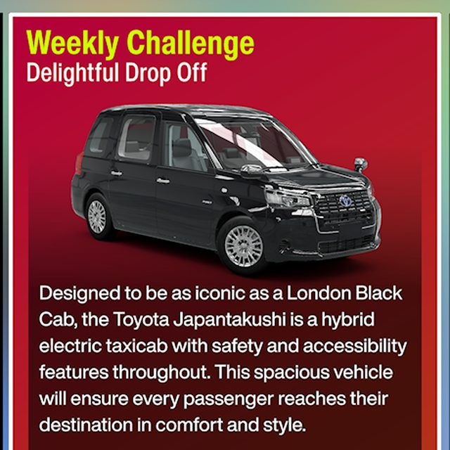

Weekly Challenge5 очков
Delightful Drop Off
Условие: На 2017 Toyota JPN Taxi: получить 3 навыка Feed Me, припарковаться на любой Car Meet и сфотографировать машину у Tokyo Central Railway Station. Награда: 25 000 CR.
Как выполнить: Возьмите такси и разбейте три автомата с напитками у северо-восточного входа Horizon Stadium. Совет сообщества: в Horizon Solo можно трижды разбить один автомат с перемоткой, выдерживая 3–5 секунд между повторами. Затем припаркуйтесь на любом Car Meet и сделайте фото такси у Tokyo Central Railway Station.
Автомобиль и тюнинг: Тюнинг не обязателен. Более удобный текущенедельный B600-вариант для дороги: 2017 Toyota JPN Taxi — 632 647 794.